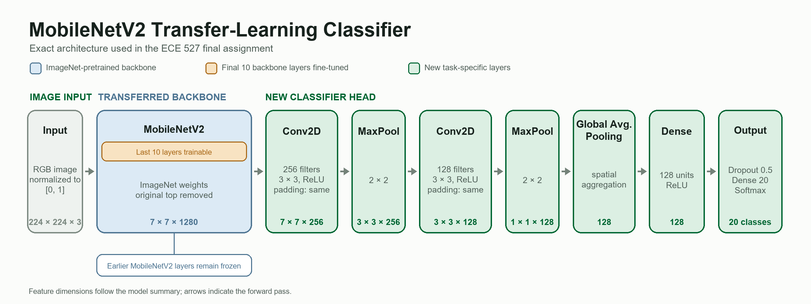
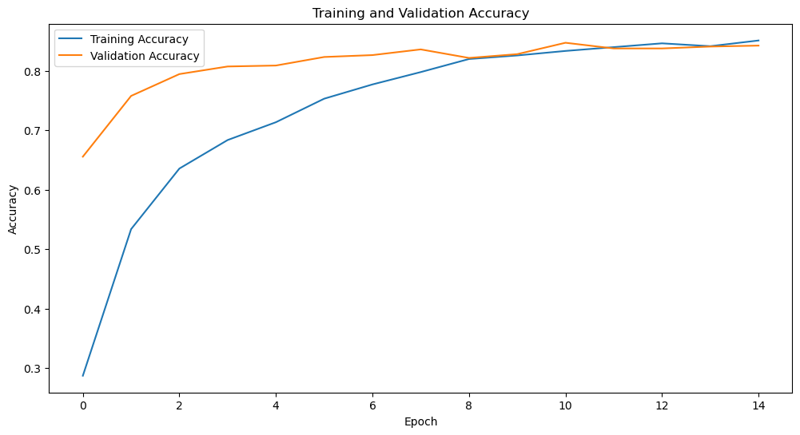
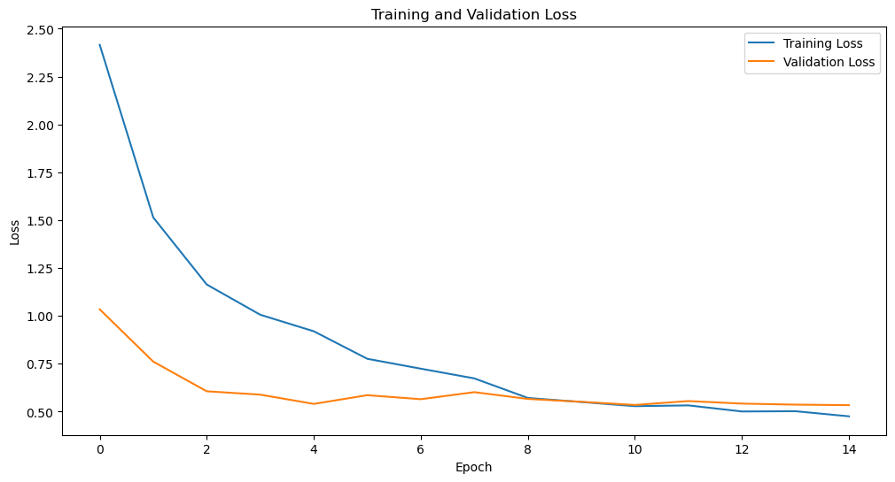
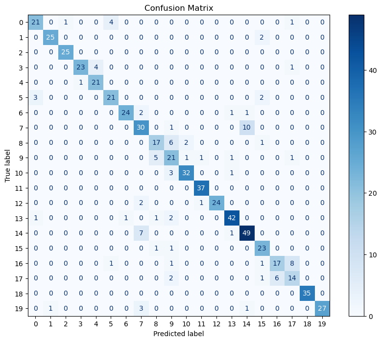

ECE 527 · Learning From Data
Transfer Learning for 20-Class Dog Image Classification
This course capstone adapts an ImageNet-pretrained MobileNetV2 to a 20-class dog-image dataset. The project covers the full workflow from preprocessing and augmentation through fine-tuning, learning-curve analysis, confusion-matrix inspection, and evaluation on unseen data.
Dataset
3,132 RGB images at 224 × 224 resolution across 20 classes.
Transfer strategy
ImageNet-pretrained MobileNetV2 with its final 10 layers fine-tuned.
Evaluation
84.21% held-out accuracy and 92.00% on a separate 100-image set.
Problem Setup
A Complete Multi-Class Classification Pipeline
The provided data contain 3,132 dog images assigned to 20 numerical class labels. A fixed 80/20 split was used for model development: 2,505 images for training and 627 for held-out validation and testing. A separate 100-image course evaluation set was used after model development.

- Input scaling
- Pixel intensities are normalized from [0, 255] to [0, 1].
- Data split
- An 80/20 split with a fixed random seed supports repeatable evaluation.
- Augmentation
- Random rotation, translation, shear, zoom, and horizontal flipping reduce overfitting.
- Output
- A 20-unit softmax layer produces class probabilities for each image.
Course Foundations
From Classical Models to Transfer Learning
Earlier assignments established the model-selection and evaluation ideas used in the capstone. They are supporting foundations rather than separate projects on this page.
- Classical classification
- Kernel density estimation, Naive Bayes, the perceptron algorithm, and linear and nonlinear SVMs.
- Regression models
- Linear and ridge regression, followed by logistic regression for probabilistic classification.
- Tree-based learning
- Decision trees, random forests, Extra Trees, AdaBoost, cross-validation, and grid search.
- Neural networks
- MLPs and CNNs introduced representation learning, regularization, and architecture comparison before the transfer-learning capstone.
Model Design
Fine-Tune a Pretrained Visual Representation
An initial CNN trained from scratch produced only about 2.5% validation accuracy, motivating reuse of ImageNet features. The final architecture keeps most of MobileNetV2 frozen and adapts its highest-level features to the 20-class task.
- Backbone
- MobileNetV2 without its original classification head; only the final 10 backbone layers are unfrozen.
- Task-specific head
- Two convolutional blocks with 256 and 128 filters, global average pooling, a 128-unit dense layer, and 50% dropout.
- Optimization
- Adam with an initial learning rate of 10−4, batch size 16, and 15 training epochs.
- Learning-rate control
- ReduceLROnPlateau lowers the learning rate when validation loss stops improving.

Quantitative Results
Convergence and Generalization
Training and validation curves converge near the same level, with limited evidence of late-stage overfitting. The confusion matrix is strongly diagonal overall while exposing specific class pairs that remain difficult to separate.
Final training accuracy
85.07% after 15 epochs.
Held-out accuracy
84.21% with a loss of 0.5338.
Separate evaluation set
92.00% accuracy on 100 unseen images.


